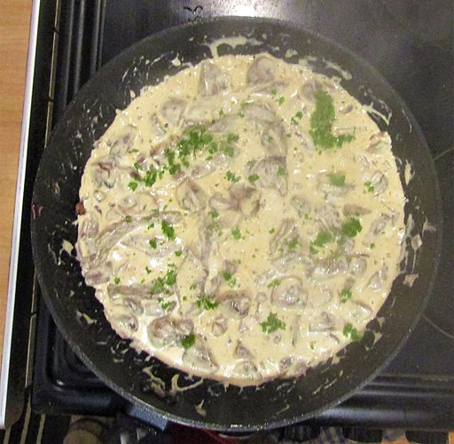

Beef and Mushroom Stroganoff

Ingredients
- 500g lean beef strips
- 500g mushrooms, sliced
- 250g extra light soft cheese
- 2 tbsp Worcestershire Sauce
- 2 tbsp White Wine vinegar
- 1 large onion, sliced
- 500ml boiing Beef stock
- Salt and pepper to season
Steps
- Quick fry the beef until browned, then remove from the pan
- Mix the Worcestershire Sauce and White Wine vinegar and add to the pan,
then stir until most of the liquid has evaporated
- Add the onions and mushrooms and fry until browned, stirring frequently
- Add the stock and simmer until liquid is reduced by half, stirring frequently
- Reduce heat to low and add the soft cheese, stirring until smooth/no lumps remain
- Return the beef to the pan and cook for a further ten minutes, stirring frequently
- Serve with rice